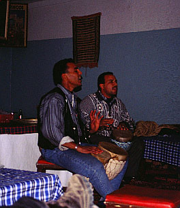
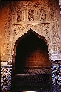
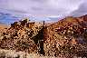
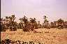
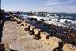
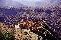
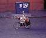

FAS
/ MOROCCO
By Esra
Bayoglu
(23 Aralik 1999 - 7 Ocak 2000)
Sorry! The story is in Turkish, but you are welcome to have a look
at the Photo Gallery.
DIKKAT! Bilgisayariniz
Turkce karakterleri destekliyorsa once buraya tiklayiniz
Kisitli zamanda, Fas'in sadece kucuk bir bolumunu gezebildik. Olsun,
cok guzel bir giris oldu gene de. Yolculugu Ingiltere'den bize katilacak
olan Marc ve Hirut'la birlikte yapacagimiz icin gitmeden once bir plan
yapmamis, herseyi Marakes'te bir araya geldigimizde
kararlastiririz diye dusunmustuk. Ama ben, icin icin, daha cok Fas'in guneyini,
daglari, colu ve kucuk yerlesimleri gormek istiyordum. Nitekim buyuk olcude
oyle oldu. Marakes, Agadir ve Essauira disinda buyuk sayilabilecek baska
bir sehre gitmedik. Meknes, Fes, Rabat, Tanjer ve Casablanca gibi diger
buyukleri de baska bir sefere birkamis olduk. Iste bu renkli ve dolu dolu
yolculugun kendi gozlemlerimden ozetlemeye calisacagim kisa oykusu.
 Gezimize
Marakes'te basladik. Bu hareketli, goz alabildigine kirmizi binalari ile
simsicak bir gorunuse sahip, tarihi sehirde cok keyifli bir uc gun gecirdik.
Sehrin ilginc olan bolumu tabii ki eski/tarihi sehir yani "medina" idi.
Daracik sokaklar, binbir cesit yiyecek, baharat ve elisleri satan carsilar
ve en guzeli butun gun haril haril faaliyetlerle dolup tasan buyuk meydan
"Cema el-Fna". Ramazan'in da etkisiyle herhalde, gece gec saatlere kadar
yiyecek tezgahlari, yilan oynaticilari, rengarenk giysileri ile su saticilari,
ucu bucagi gorulmeyen taze sikilmis portakal suyu tezgahlari ve en ilginc
olani da hikaye anlaticilar (ya da masalcilar) ile civil civil bir ortam.
Bu televizyon oncesi cok eski gelenegi hala surduruyor olmalari cok hos.
Kendi kucuk orkestralari ile kimi zaman sarkili turkulu, kimi zaman dansli
bu gosteriler bizim orta oyunu dedigimiz tarzda bir sey olsa gerek. Konusmalar
arapca veya Berberi dilinde oldugu icin bir sey anlamasak da, seyircilerin
olusturdugu halkanin arasina sizip seyretmek buyuk bir zevkti.
Gezimize
Marakes'te basladik. Bu hareketli, goz alabildigine kirmizi binalari ile
simsicak bir gorunuse sahip, tarihi sehirde cok keyifli bir uc gun gecirdik.
Sehrin ilginc olan bolumu tabii ki eski/tarihi sehir yani "medina" idi.
Daracik sokaklar, binbir cesit yiyecek, baharat ve elisleri satan carsilar
ve en guzeli butun gun haril haril faaliyetlerle dolup tasan buyuk meydan
"Cema el-Fna". Ramazan'in da etkisiyle herhalde, gece gec saatlere kadar
yiyecek tezgahlari, yilan oynaticilari, rengarenk giysileri ile su saticilari,
ucu bucagi gorulmeyen taze sikilmis portakal suyu tezgahlari ve en ilginc
olani da hikaye anlaticilar (ya da masalcilar) ile civil civil bir ortam.
Bu televizyon oncesi cok eski gelenegi hala surduruyor olmalari cok hos.
Kendi kucuk orkestralari ile kimi zaman sarkili turkulu, kimi zaman dansli
bu gosteriler bizim orta oyunu dedigimiz tarzda bir sey olsa gerek. Konusmalar
arapca veya Berberi dilinde oldugu icin bir sey anlamasak da, seyircilerin
olusturdugu halkanin arasina sizip seyretmek buyuk bir zevkti.
Eski sehir ve yeni sehir... Galiba bu ayrim Fas'in hemen butun sehirleri
icin gecerli. Eski sehir, adi uzerinde; icinde tum tarihi, eski saray,
cami ve bahceleri, kucuk is yerlerini ve carsilari, ve en guzeli gelenek
ve gorenekleri tum canliligiyla konuk eden, etrafi duvarlarla cevrili kisim.
Yeni sehir ise fransiz somurgesi altinda iken fransizlar tarafindan kurulmus,
genis caddeleri, yuksek binalari, otelleri ve ishanlariyla tamamen Avrupai
yapida, bence pek de ruhu olmayan komsu sehir.
44 yil fransiz somurgesinde kalmis olmalarinin kacinilmaz etkileri her
yerde karsimiza cikiyordu. Coluk cocuk yasli genc herkes sakir sakir fransizca
konusuyor. Tabelalar hem arap hem de latin alfabesiyle yaziliyor. Gittigim
her yerde hayat kurtariciligimi yapan ingilizcemin burada neredeyse hic
isime yaramamasi onceleri bayagi bir hayal kirikligina ugrattiysa da, bildigim
uc bes fransizca ve arapca sozcuklerle, tam anlamiyla tarzanca anlasmanin
da epey zevkli bir sey oldugu kanisina vardim ve bu durumun keyfini cikardim.
Nasil olsa karisik durumlar Pierre, Marc ve Hirut'un fransizcasi ile cozuluyordu...
 Fas'in
kendine has bir mimarisi var. Hemen hemen butun yapilarin
koseli ve cikintisiz olusu galiba goze ilk carpan sey oluyor. Eski
yapilarda catilar duz, dam yerine bircok amac icin kullanilan teraslar
oturtulmus tepelerine. Yagmur ve kara cok alisik olmadiklari icin Fas sehirleri,
bu teraslar da evlerin bahcesi gorevini ustlenmis sanki. Oynayan cocuklar,
havalansin diye disariya birakilmis kilimler halilar, asili camasirlar,
sohbete gelmis komsular...
Fas'in
kendine has bir mimarisi var. Hemen hemen butun yapilarin
koseli ve cikintisiz olusu galiba goze ilk carpan sey oluyor. Eski
yapilarda catilar duz, dam yerine bircok amac icin kullanilan teraslar
oturtulmus tepelerine. Yagmur ve kara cok alisik olmadiklari icin Fas sehirleri,
bu teraslar da evlerin bahcesi gorevini ustlenmis sanki. Oynayan cocuklar,
havalansin diye disariya birakilmis kilimler halilar, asili camasirlar,
sohbete gelmis komsular...
Tamam evlerin binalarin kubik bir yapida olmasina cok da yabanci degiliz
elbette ama ya Fas camilerinin hic bir kavis icermemelerine ne demeli?
Evet, burada cami minareleri kare prizma seklinde, ana binasini ise, degisik
renkte boyanmasi, bazen de dis suslemeleri disinda diger binalardan ayirt
etmek guc. Yalniz dis mimarideki bu yalinlik ic ortam ile tam bir tezat
olusturabiliyor. Camilerin ve saraylarin icleri ahsap susleme sanatinin
ve "zelij" adini verdikleri seramik suslemelerin en guzel ornekleri ile
bezenmis. Hele o kapilar, ustu yuvarlak dev anahtar delikleri, bence Fas'in
en akilda kalici (yani benim favorim) ozelligi.
Dogal olarak her sehrin bir kalesi var, bazen kucucuk koylerin bile.
Soylemeye gerek yok, tabii ki "kazba" adi verilen bu kaleler de alisageldigimiz
kalelerden daha farklilar. En hosa giden sey de pembe oluslari ya da toprak
rengi demek daha dogru belkide. Kerpicten yapilip kille sivandiklari, tepeye
dogru daralan egimli duvarlardan olusan kulelere sahip olduklari icin cok
kendine has gorunumdeler. Kazba'larin yanisira eski sehirler hep surlarla
cevrilmis. Cogu da ayakta bu surlarin. Eski sehir duvarlarin icinde kalirken
sehrin yeni yapilan kismi surlari cevrelemis. Su anda hic bir islevi kalmamis
olan bu duvarlarin, kucuk koy bazinda dahi uygulanmis olmasi ("ksur" sur
ici koyler yani) eskiden cesitli kabilelerin birbirine daimi dusman olmasi
yuzunden her an gelebilecek saldirilar icinmis.
Marakes maceramizi seramik ve agac oyma sanatlarinin guzel ornekleri
ile goz doyuran bir kac saray gezerek noktaladik. Buradan, kiraladigimiz
araba ile yollara dokulduk daha sonra. Yuksek Atlas daglarini asarak guneye
gecisimiz zihnimize yer eden bir baslangic oldu. En yuksek zirvesi (Tubkal)
4165m olan bu dag silsilesi sehirden bakildiginda asilmaz bir tastan duvar
gibi gozukuyordu ama yol bir sekilde kivrila kivrila bizi obur tarafa yani
Buyuk Guney'in yuksek platolarina ve collesmis yapisina acilan kapiya goturdu,
Tizi'n'Tiska Gecidi'ne.
Atlas daglarinda ve eteklerinde ve colun bazi bolgelerinde buyuk bir
yogunlulukla Berberiler yasiyorlar. Araplarin, Islamin yayilmasi
surecinde 7. yuzyilda Fas'a ulasmasindan cok once
kuzey Afrika'da (bazi kaynaklara gore neolitik cagdan bu yana) Berberiler'in
yasadigi dusunulurse, buralarin asil yerlileri demek pek de yanlis olmaz
sanirim. Fas'in resmi dili arapca. Yuzyillar boyu suren Arap egemenligi
asi ve savasci olarak un yapmis Berberi kabilelerin kulturune pek de etki
edememis. Halen kendi dillerini konusup geleneklerini surduruyorlar. Fas'in
ve Cezayir'in guneyinde yasayan ve giysilerinin renginden ve bu rengin
neredeyse tenlerine islemis olmasindan dolayi "mavi insanlar" diye anilan
"Moor"lari da unutmamak gerekiyor. Bazilari da bu insanlara "Tuareg"ler
diyor ama ben "col insanlari" demeyi tercih ediyorum cunku onlar kendilerine
col insani diyorlar. 1975 yilinda Ispanyollar'in cekilmesinin hemen ardindan
Fas'in isgal ettigi Bati Sahra'da yasayanlari da dahil etmek gerekiyor
sanirim insan cesitliligine. Kaderlerinin belirlenmesi icin, soz verilmis
bir referandumun yapilmasini bekleyen bu insanlarin kokeni hakkinda bir
bilgim yok, ama Cezayir sinirina kadar gerilemis bir gerilla savasinin
suregeldigini yani bagimsizlik yonunde bir cabalari oldugunu soyleyebilirim
ancak.
Fas'ta gozlemledigim kadariyla kadinlarin sosyal
durumu
da cesitlilik gosteriyor. Buyuk sehirlerde modern giysili (hadi carsafsiz
ve basortusuz diyeyim; illa bizim giyim tarzimiz modern olacak diye bir
sart yok) genc yasli bir cok kadin var. Ancak kucuk kasaba ve koyler icin
ayni seyi soylemek pek mumkun degil. Her yerde oldugu gibi tutuculuk arttikca
sokaklardaki ortusuz kadin sayisi da azaliyor. Ancak burada kadinlarin
kara carsaflarla dolastiklarini soyleyemiyecegim. Aksine alabildigine renkli
ve canli giysiler giyiyorlar. Cocuklarini da kapip gittikleri o pazar yerleri
ornegin, o kadar civil civil ki. Erkeklerin giysilerinde ayni renklilik
yok ama onlarin da benim cok sevimli buldugum, "celaba"lari var. Yere kadar
uzanan kukuletali ustlukler diye tanimlayabilecegim bu giysiler en goze
carpan yoresel giysileri bence. Insanlar turistlere karsi oldukca hosgorululer
ancak fotograflarinin cekilmesine siddetle karsi cikiyorlar. Bu yuzden
bazen isi paparazzi duzeyine vardirmak zorunda kaldigim icin utaniyorum
ama baska carem de yoktu.
 Araba
yolculuklarindan genelde hoslanmam ama burada yollarin buyuk bir bolumunun
cok bakimli olusu, trafigin buyuk sehirlerden uzaklastiktan sonra neredeyse
sifira inisi, bazen iyiyden iyiye daralan yollarda, agir agir ilerlerken,
bolca etrafi seyretme ve fotograf cekme olanagi olusu, yolculugu bastan
sona cok keyifli kildi. Bazen yol boyunca dizilmis hurma veya elisi hediyelikler
satan, yolun ortasinda oylece korkmadan duran cocuklardan sakinarak, yilan
gibi kivrilarak gitmemiz gerekiyordu.
Araba
yolculuklarindan genelde hoslanmam ama burada yollarin buyuk bir bolumunun
cok bakimli olusu, trafigin buyuk sehirlerden uzaklastiktan sonra neredeyse
sifira inisi, bazen iyiyden iyiye daralan yollarda, agir agir ilerlerken,
bolca etrafi seyretme ve fotograf cekme olanagi olusu, yolculugu bastan
sona cok keyifli kildi. Bazen yol boyunca dizilmis hurma veya elisi hediyelikler
satan, yolun ortasinda oylece korkmadan duran cocuklardan sakinarak, yilan
gibi kivrilarak gitmemiz gerekiyordu.
Buyuk Atlaslar'i astiktan sonra ilk duragimiz olan Ait Benhadu'ya vardigimizda,
karli tepelerin ve dagdan indikce kivrilarak aralarindan gectigimiz palmiye
agaclari ve kaktuslerle suslu toprak rengi koylerin verdigi goz banyosuyla
kendimi cok daha mutlu hisseder olmustum. Ait Benhadu bundan sonra gorecegimiz
kazbalarin en gorkemlisi, en dramatik konumlusuydu. Bu kazba bir
tepeyi icine alarak yapilmis. Icerisinden, kerpic ve kil duvarlar arasindan
daracik sokaklardan, zaman zaman kaybolunarak tepesine ulasilabiliyor.
Buradan butun vadi ve plato neredeyse ayaklar altinda. Buyuk guneyin Sahra
Colu'ne dogru uzanan issiz kurak ve taslik yapisi gorulebiliyor. Draa nehri
boyunca, vahalarda kurulmus koy ve sehirler disinda doganin oldukca kuru
ve acimasiz oldugunu sezinliyor insan. Ertesi gun ulastigimiz muhtesem
Dades Vadisi en huzurlu ve sessiz geceyi gecirdigimiz yer oldu. Siril siril
suyun aktigi, mis kokulu bahcelerle bezenmis bu vadinin benim kalbimde
ayri bir yer edinmis olmasinin bir sebebi de, kaya yapisi ve tepelerin
gun batimiyla kipkirmizi kizarmasiyla, bana Turkiye'deki Aladaglari animsatmasi
oldu.
Daha sonra burnumuzu guneye, Cezayir'e dogrulttuk. Sinira cok yakin
olan M'hamid'e Draa nehri boyunca bitip tukenmeyen vahalari takip ederek
ulastik. M'hamid'e yaklastikca etraf daha bir sarardi, yol, ruzgarin savurdugu
col kumlarindan gorunmez oldu ara ara. Boylece, bir taraftan arabayi kullaniyor
diger taraftan da kum tepelerinin arasinda gecirecegimiz geceyi dusunup
heyecanlaniyordum. Planladigimiz gibi devecilerle anlasip koyun 12 km guneyindeki
bu kucuk captaki cole ulastik. Anlasmamiza gore bize aksam yemeginde tajin
de yapacaklardi. Ben soguk moguk demeden acikta gecelemeyi istiyordum ama
ruzgar oyle bir acimasiz esiyordu ki nefes almak bile guctu. Boylece kafamiza
tulbent esarp namina yanimizda ne varsa sarip, tepeler arasinda epey bir
dolastiktan sonra geceyi oba cadirlarinda gecirdik. Sabah uyandigimizda
kulaklarimiza, agzimiza, gozlerimize bile kum dolmus oldugunu gorunce hic
sasirmadik elbet. Ben bu benzersiz tecrubeden cok mutluydum. Bana kalsa
daha da kalacaktim, ama sanirim herkes benim gibi dusunmuyordu. Boylece
sabahleyin tekrar yollara dokulduk.
Hedefledigimiz Anti Atlaslar'a daha iki gunluk yolumuz
vardi. Bir geceyi, ki bu gece yeni yila girdigimiz geceydi, Uarzazat adli
kucuk kasabada gecirdik. Milenyum muymus neymis, burada, biz dahil
kimsenin umrunda olmadigi icin, dunyanin obur taraflarindaki tantanalardan
uzak, gece yarisi bile olmadan uykuya daldik. Bir gece de Tarudant'ta kalip
tekrar daglara bu sefer Anti Atlaslar'a yoneldik. Kivrila kivrila yukseldikce
manzara oyle guzellesti ki arabayi kullanan ben, bir cok fotograf ve goz
zevki molasi vermek zorunda kaldim kendime. Daracik yol uzun uzun dik yamaclarda,
ucurum kenarlarinda seyretti ve bizi Tafraut'a, bir sekilde dagcilar arasinda
da populer olmus bir koye ulastirdi. Bu civarda doga gercekten olagan disi
bir goruntudeydi. Etraf daglar, kayalar ve ilginc figurler halini almis
taslar ile suslenmisti adeta. Bu goruntu Belcika'li bir ressama da ilham
kaynagi olmus olsa gerek ki, tutmus bazi kayalari boyamak uzere yetkililerden
izin almis. Bence pek de iyi etmemis ama gene de gittik gorduk nasil bir
sanat icra ettigini.
Yolculuk boyunca kucuk otel ve motellerde konakladik hep. Bu tur oteller
hem cok sevimli hem de sehrin en gorulmeye deger yerlerine yakin olduklari
icin cok avantajlilar. Sahipleriyle de sicak bir ilestisim kurulabildigi
icin, kimi zaman kitaplarda bulamiyacaginiz ilginc bilgiler ve gozlemler
edinmek mumkun oluyor. Bi de iyi gunlerindeyseler aksamlari oturma odasinda
muhtesem bir muzik soleni bekliyor sizi. Yoresel calgilarinin en yaygini,
kendi aralarinda "tamtam" dedikleri, farkli iki boyutta, birbirine
baglanmis davullar. Muzigin
geri kalani ise soylenen sarkilar ve ritmik el cirpmalar ile yapiliyor.
Ama dizlerinin arasina sikistirdiklari o davullar ile harikalar yaratiyorlar
diyebilirim. Muhtesem ritimler tutturan parmak kadar cocuklari gordukten
sonra muzigin bu insanlarin genlerinde olduguna karar vermek durumunda
kaldim. Ara sira biz de davul calmaya davet edilip kendimizi buyuk bir
zevkle komik duruma dusuruyorduk. Merak ettiniz diil mi bahsettigim muzigi?
O zaman yandaki baylarin resminin uzerine tiklamayi deneyin bir...
Tajin, kuskus ve nane cayi isimlerini artik hep Fas'la bagdastiracagim
heralde. Insan on bes gun boyunca hergun ayni seyleri yer icer de nasil
bikmaz demeyin, oluyor iste. Nasil olduysa hergun ya kuskus ya tajin ya
da sis kebap yedik. Herkesin kendine has bir stili oldugundan mi, yoksa
icerdikleri cesit cesit sebzelerin ve her seferinde farkli bicimde kullanilmis
olan baharatlarin etkisiyle mi bilemiyorum, buyuk bir zevkle her gun, Fas'in
bu geleneksel yemeklerini yemeden edemedik. Kuskus bize yabanci degil.
Tajinin ise sadece adi degisik. Kendisi bizim "guvec" dedigimiz yemegin
gene toprak ama degisik sekilde olan bir kapta, bir porsiyonluk pisirilmis
sekli. Burada nane cayindan baska cay icilmedigi icin o konuda bir alternatifimiz
yoktu zaten. Son olarak da yemek listeme, butun gun serinlikte elimiz ayagimiz
buz kesene kadar dolastiktan sonra menumuzden hic eksik etmedigimiz "harira"
corbasini eklemek istiyorum. Sicak ve tazecik pide ve ekmekler de yemek
soframizi tamamlayan guzelliklerden biriydi elbette.
Evet sonunda paket turlarin ugrak yeri, plajli, bes yildizli otelli
Agadir'deyiz. Saka maka 1700 km yol yapmisiz arabayla. Agadir ilgi alanimiz
icine girmedigi icin, kiraladigimiz arabayi devredip bir an once cok daha
sevimli bulacagimiza inandigimiz, yine bir sahil sehri olan Essauira'ya
ulasmaya calisiyoruz. Ve basardik. Gece yarisi ulastik Essauira'ya.  Burada
keyifle gecirecegimiz uc gunumuz var, son uc gunumuz yani. Marakes'in kirmiziligindan
farkli olarak burasi bembeyaz bir sehir. 18. yuzyilda fransiz bir mimara
yaptirilmis ucsuz bucaksiz surlari ve yuru yuru doyamadigim daracik labirent
sokaklari var. Aslinda bembeyaz demek yanlis olur, cunku kapilarin ve pancurlarin
(ama gercekten hepsinin) o capcanli mavisine haksizlik etmis oluruz aksi
takdirde. Otelimiz pazar meydanina bakiyordu boylece cikar cikmaz kendimizi
canliligin icinde buluveriyorduk. Ramazan dolayisiyla kurulan panayirlar,
cocuklar icin donme dolaplar da iceren pazar yerinden gecip, her gun uzun
yuruyusler yaptik. Kimi zaman kilimcilerle pazarlik ettik kimi zaman yoreye
has agac isi esyalara baktik ve tabii ki rampalara tirmanip Atlas Okyanusu'nun
kopuklu dalgalarini seyretmeyi de hic ihmal etmedik. Yolculuk bitiminde,
bizim de guzel kilimlerimiz, ahsaptan cok guzel bir satranc takimimiz ve
deri isleme guzel bir pufumuz olmustu. Ama nasil olmustu hic sormayin.
Binbir pazarlik ve dil dokme taktikleri sonucunda, uyanik saticilara sandiklari
kadar saf olmadigimizi kanitlamaya calisarak oldu. Burada saticilar, her
yerde oldugu gibi, turistlerin hic gozunun yasina bakmadan kazikliyorlar.
Bir ikincisi de Fas'ta gercekten buyuk boyutlara ulasmis komisyonculuk
ve sahte rehberlik. Bu iki tip insandan sakinmak, ozellikle kimin araci
oldugunu anlamak oyle zor oluyordu ki anlatamam. Fas'ta issizlik oraninin
ve genc nufusun cok fazla oldugu dusunulurse, insanlarin boylesine kendilerine
gelir kapisi aramalarina cok da sasirmamak gerekir elbette.
Burada
keyifle gecirecegimiz uc gunumuz var, son uc gunumuz yani. Marakes'in kirmiziligindan
farkli olarak burasi bembeyaz bir sehir. 18. yuzyilda fransiz bir mimara
yaptirilmis ucsuz bucaksiz surlari ve yuru yuru doyamadigim daracik labirent
sokaklari var. Aslinda bembeyaz demek yanlis olur, cunku kapilarin ve pancurlarin
(ama gercekten hepsinin) o capcanli mavisine haksizlik etmis oluruz aksi
takdirde. Otelimiz pazar meydanina bakiyordu boylece cikar cikmaz kendimizi
canliligin icinde buluveriyorduk. Ramazan dolayisiyla kurulan panayirlar,
cocuklar icin donme dolaplar da iceren pazar yerinden gecip, her gun uzun
yuruyusler yaptik. Kimi zaman kilimcilerle pazarlik ettik kimi zaman yoreye
has agac isi esyalara baktik ve tabii ki rampalara tirmanip Atlas Okyanusu'nun
kopuklu dalgalarini seyretmeyi de hic ihmal etmedik. Yolculuk bitiminde,
bizim de guzel kilimlerimiz, ahsaptan cok guzel bir satranc takimimiz ve
deri isleme guzel bir pufumuz olmustu. Ama nasil olmustu hic sormayin.
Binbir pazarlik ve dil dokme taktikleri sonucunda, uyanik saticilara sandiklari
kadar saf olmadigimizi kanitlamaya calisarak oldu. Burada saticilar, her
yerde oldugu gibi, turistlerin hic gozunun yasina bakmadan kazikliyorlar.
Bir ikincisi de Fas'ta gercekten buyuk boyutlara ulasmis komisyonculuk
ve sahte rehberlik. Bu iki tip insandan sakinmak, ozellikle kimin araci
oldugunu anlamak oyle zor oluyordu ki anlatamam. Fas'ta issizlik oraninin
ve genc nufusun cok fazla oldugu dusunulurse, insanlarin boylesine kendilerine
gelir kapisi aramalarina cok da sasirmamak gerekir elbette.
Son gun Essauira'dan ayrilip Agadir'e geri donduk. Son bir tajin-kofta
yiyip dogru havaalanina yollandik. Boylece dolu dolu gecirdigimiz iki haftayi
geride guzel anilar birakarak ve tekrar gelecegimize soz vererek tamamlamis
olduk.
Fotograf Galerisi / Photo
Gallery
Lutfen galeriye girmek icin fotograflarin uzerine tiklayiniz /
Please click on the icons to enter the sections
of the gallery
Marakes
/ Marrakesh
Yuksek
Atlaslar / High Atlas
Draa
Vadisi / Draa Valley
Essauira
/ Essaouira
Anti
Atlaslar / Anti Atlas

Insanlar / People